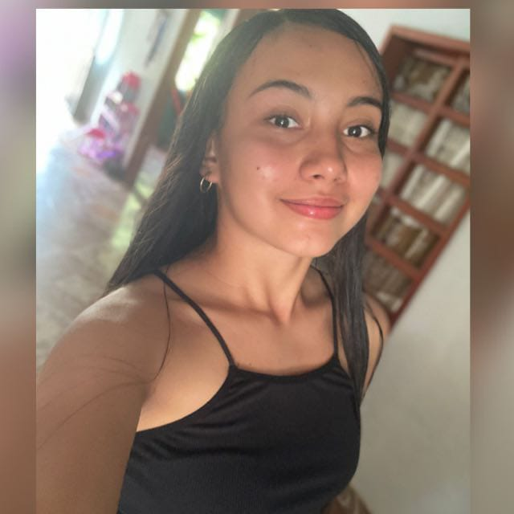
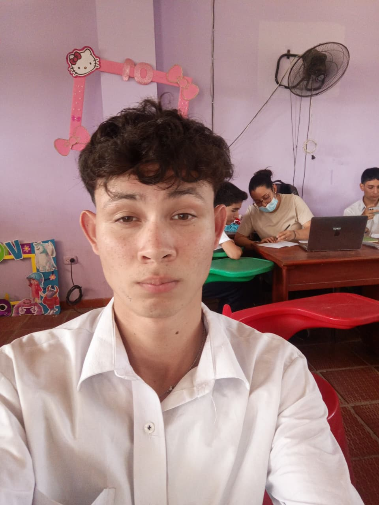
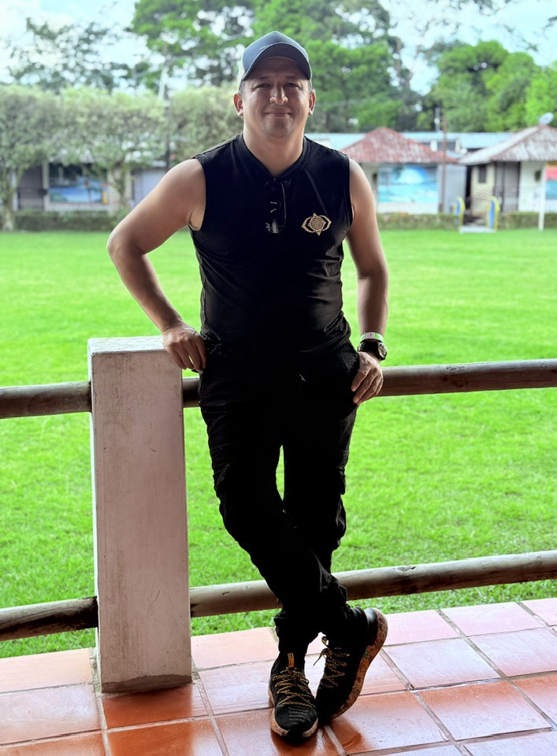

Quiénes hacen posible este bosque digital
Cada ficha, cada fotografía y cada línea de código tiene nombre propio. Estas son las personas que sembraron SILVAIN en la I.E. Jesús Bernal Pinzón.

Jair Calixto Hernández
Líder del grupo · Encargado digitalDesarrollo web, Calculadora de Carbono, Arquitectura de Inteligencia Artificial e Inventario Forestal.

Sara Margarita Ávila
FotógrafaEspecialista en fotografía, identificación y recolección de campo.

Diego Alejandro Hernández Daza
AnalistaRecolección de DAP y altura estimada, cálculo de biomasa y carbono.

Acompañamiento institucional
Edwin Ricaurte Avella
Docente Asesor · Guía Técnico SENA
Mentor pedagógico en la Técnica de Conservación de Recursos Naturales (I.E Jesús Bernal Pinzón).